/geiger reading for SPY and QQQ to six decimals on all seven rungs (test pinned). The point-in-time universe (deliverables/20260928/point-in-time) has not landed on the live branch; where a study needs survivorship-free names (Q1 leaders, Q4 leaders below the 200-day) it reads the N9 lane's local cache of the same data and says so. Every chart is a saved PNG in charts/, every number is read from data/*.json, and every study writes its inputs, its cells tried and its false-discovery check.THE QUESTION
Some pairs sit at their lowest ever (S&P, communication services, Nasdaq-100) while equal-weight health care and utilities sit at their strongest. What did that combination mean before? Is equal weight trailing the normal state? What happened to the cap-weight leaders when breadth swung like this? Today: SPY −0.70%, QQQ −0.94%, RSP −0.53% on Alan's screen (the chart API's finished bars say SPY -0.74%, RSP -0.65%).
What we measured. The regime lane's pairs (equal-weight fund ÷ cap-weight fund, sector pairs under the Invesco funds' old tickers before 2023 from the FMP pull, stitched to the chart API's bars), each ratio's own-history percentile using prior days only. The "split" is, each day, the highest sector-pair percentile minus the lowest. "Both tails" is a day with at least one sector pair in its bottom 5% and another in its top 5%. Outcomes are SPY, equal minus cap weight (RSP − SPY) and the point-in-time top-20 leaders basket minus SPY over 21, 63, 126 and 252 sessions, with stationary block bootstrap ranges and base rates beside them.
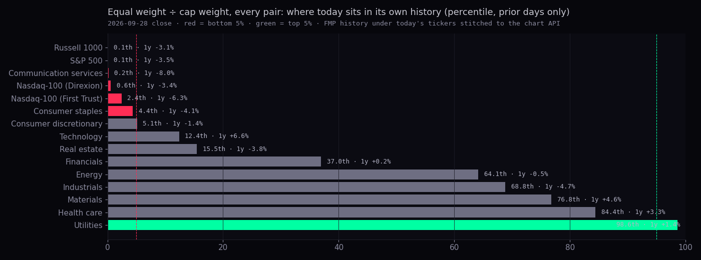
| pair | own percentile today | one-year change | history | lowest on | highest on |
|---|---|---|---|---|---|
| Russell 1000 (EQAL ÷ IWB) | 0th | -3.1% | 2014-12-24 → 2026-09-25 | 2025-11-03 | 2015-04-15 |
| S&P 500 (RSP ÷ SPY) | 0th | -3.5% | 2003-05-01 → 2026-09-28 | 2026-05-14 | 2015-04-06 |
| Communication services (RSPC ÷ XLC) | 0th | -8.0% | 2018-11-07 → 2026-09-28 | 2026-09-24 | 2018-11-19 |
| Nasdaq-100 (Direxion) (QQQE ÷ QQQ) | 1st | -3.4% | 2012-03-21 → 2026-09-28 | 2026-05-14 | 2013-07-23 |
| Nasdaq-100 (First Trust) (QQEW ÷ QQQ) | 2nd | -6.3% | 2011-03-23 → 2026-09-25 | 2026-05-14 | 2011-05-16 |
| Consumer staples (RSPS ÷ XLP) | 4th | -4.1% | 2006-11-07 → 2026-09-28 | 2008-11-28 | 2018-04-27 |
| Consumer discretionary (RSPD ÷ XLY) | 5th | -1.4% | 2006-11-07 → 2026-09-28 | 2020-05-13 | 2007-06-07 |
| Technology (RSPT ÷ XLK) | 12th | +6.6% | 2006-11-07 → 2026-09-28 | 2025-10-29 | 2019-02-20 |
| Real estate (RSPR ÷ XLRE) | 15th | -3.8% | 2015-10-08 → 2026-09-28 | 2020-05-13 | 2016-02-09 |
| Financials (RSPF ÷ XLF) | 37th | +0.2% | 2006-11-07 → 2026-09-28 | 2008-10-28 | 2022-10-11 |
| Energy (RSPG ÷ XLE) | 64th | -0.5% | 2006-11-07 → 2026-09-28 | 2008-12-05 | 2011-07-28 |
| Industrials (RSPN ÷ XLI) | 69th | -4.7% | 2006-11-07 → 2026-09-28 | 2008-12-05 | 2024-12-12 |
| Materials (RSPM ÷ XLB) | 77th | +4.6% | 2006-11-07 → 2026-09-28 | 2008-06-24 | 2022-08-26 |
| Health care (RSPH ÷ XLV) | 84th | +3.3% | 2006-11-07 → 2026-09-28 | 2006-11-17 | 2021-09-24 |
| Utilities (RSPU ÷ XLU) | 99th | +1.4% | 2006-11-07 → 2026-09-28 | 2008-11-21 | 2026-07-01 |
How many: the split (strongest minus weakest sector pair) is 98 points today, the 82nd percentile of its history since 2007-11-06. "Both tails" days: 2133 of 4752 days (104 spells). How big: SPY's next 63 sessions after a both-tails day were a median -0.9% (range -6.6 to +3.0) against +3.8% on any day; the next year +11.1% against +13.6%. How sure: p = 0.01 over 63 sessions, so the weaker-than-usual reading is luck-proof; the spells cluster (2008, 2020, 2022, and this year), so the honest count is the spells, not the days.
In plain words: when one sector's equal-weight fund is at its strongest against its cap-weight fund while another's is at its weakest, the market is being carried by a few heavy names in one place and abandoned in another. Historically that was a late, narrow tape: the index kept rising more often than not but by less than usual, and the mean outcome hides a few bad spells. It is a reason to size by breadth, not a signal on its own.
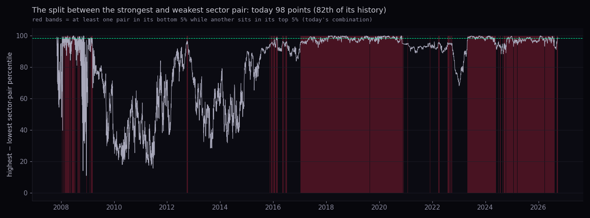
| state | spells | SPY next 21 | SPY next 63 | SPY next 252 | EW − CW next 63 | leaders − SPY next 63 |
|---|---|---|---|---|---|---|
| split in its top 5% | 69 | +1.2% [+0.2, +2.9] n69 · base +1.5 | +2.2% [-0.2, +3.9] n67 · base +3.8 | +16.5% [+14.2, +17.7] n63 · base +13.6 | -0.8% [-0.9, -0.4] n67 · base -0.1 | +0.9% [+0.3, +1.3] n67 · base -0.2 |
| one pair ≤5th and one ≥95th at once | 104 | -0.2% [-2.3, +1.4] n103 · base +1.5 | -0.9% [-6.6, +3.0] n102 · base +3.8 | +11.1% [-12.5, +13.9] n101 · base +13.6 | +0.6% [+0.2, +1.4] n102 · base -0.1 | -0.4% [-1.0, -0.0] n102 · base -0.2 |
| split at or above today's (98 points) | 144 | +1.6% [+0.9, +2.4] n143 · base +1.5 | +3.5% [+1.8, +4.6] n140 · base +3.8 | +14.4% [+12.6, +15.4] n130 · base +13.6 | -0.9% [-1.5, -0.4] n140 · base -0.1 | +1.1% [+0.5, +1.3] n140 · base -0.2 |
Yes, since 2015. RSP ÷ SPY rose from 0.279 in 2003 to a peak of 0.394 on 2015-04-06 and sits at 0.274 today, the 0th percentile of its own past (its lowest since the fund's start is 2026-05-14). Over rolling one-year windows equal weight lost to cap weight on 52% of all days since 2004, 27% of days in 2003–14 and 75% of days since 2015. Today's one-year change (-3.5%) is the 24th percentile of one-year changes: worse than usual, far from the worst (-14.4% on 2024-02-05). So "trailing" is the ordinary state of the last decade; what is unusual is the level, not the pace.
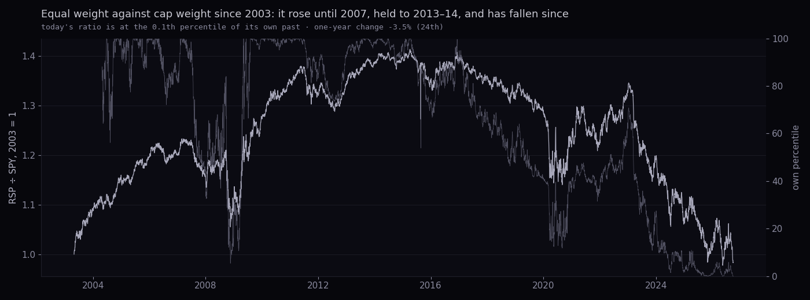
After the ratio's own bottom-5% entries (first day in the bottom 5% after 63 sessions away; 8 entries: 2024-06-12, 2024-12-06, 2025-04-09, 2025-07-14, 2025-10-13, 2026-01-14, 2026-04-17, 2026-07-21): SPY's next year was +11%, +13%, +25%, +21% (base +12.1%), equal weight minus cap weight -3, -9, -5, -5 points (it did not catch up), leaders minus SPY +11, +3, -5, -4. Four finished cases is a list, not a statistic; it agrees with the statistician-2 page's ten entries.
Today's shape is a down day on which equal weight fell less than the index (gap +0.10 points). That is 29% of all down days of 0.5% or more since 2003. On those days the leaders basket (point-in-time top 20 by market cap) lagged SPY on 56% of them by a median -0.06 points: the heavy names gave back a little, they did not sell off. What followed:
| day type | days | SPY next 5 | SPY next 21 | SPY next 63 | EW − CW next 21 | leaders − SPY next 21 | leaders − SPY next 63 |
|---|---|---|---|---|---|---|---|
| down day, EW fell less by ≥0.15 (today's shape) | 369 | +0.56% [+0.37, +0.73] n369 · base +0.37 | +1.6% [+1.0, +2.2] n369 · base +1.4 | +3.7% [+1.8, +5.0] n363 · base +3.5 | -0.09 pts [-0.25, +0.14] n369 · base +0.01 | +0.06 pts [-0.15, +0.40] n330 · base -0.02 | -0.29 pts [-0.87, +0.33] n324 · base -0.14 |
| down day, EW fell more by ≥0.15 | 429 | +0.49% [+0.25, +0.75] n429 · base +0.37 | +2.2% [+1.5, +2.9] n428 · base +1.4 | +5.1% [+3.3, +6.5] n428 · base +3.5 | +0.16 pts [-0.02, +0.42] n428 · base +0.01 | -0.12 pts [-0.33, +0.08] n376 · base -0.02 | -0.49 pts [-0.97, +0.19] n376 · base -0.14 |
| any down day ≤ −0.5% | 1293 | +0.58% [+0.47, +0.72] n1291 · base +0.37 | +1.8% [+1.4, +2.3] n1288 · base +1.4 | +4.1% [+3.0, +5.4] n1281 · base +3.5 | +0.08 pts [-0.08, +0.24] n1288 · base +0.01 | -0.06 pts [-0.26, +0.09] n1126 · base -0.02 | -0.38 pts [-0.87, +0.15] n1119 · base -0.14 |
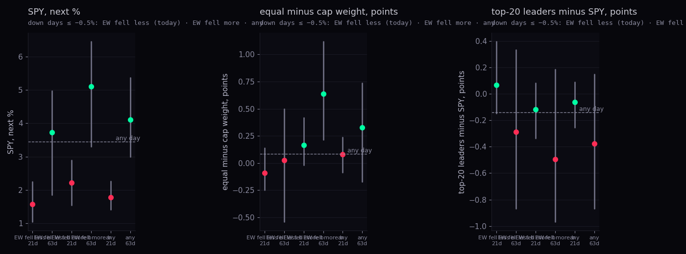
A bigger swing, 20 sessions long (equal weight beating cap weight by 2.3 points or more over 20 sessions, its top 5%; 63 spells): SPY's next 63 were +4.7% [+3.6, +5.9] n62 · base +3.5, leaders minus SPY +0.06 pts [-0.18, +0.84] n60 · base -0.14. Today's 20-session gap is -4.5 points, the other way: equal weight has been losing, and one day of falling less does not change that.
Sources: chart API daily bars (RSP, SPY, QQQ, QQQE, DIA, sector funds); regime lane FMP pull for the equal-weight sector funds before 2023 (RSPT…RSPC under their old tickers, QQEW, EQAL, IWB); N9 point-in-time cache for the leaders basket (top 20 by full market cap at the prior year-end). Percentiles use prior days only. What could be wrong: the FMP head is scaled onto the chart API's first bar so the join is continuous; the old-ticker histories are FMP's mapping; the leaders basket is to 25 Sep.
THE DEFINITION, VERIFIED
Per timeframe, TREND = the order of the 9-line fan (EMA 5/8/13/21/34, SMA 50/100/150/200) → (2 × pairs in order − 8) ÷ 8, so it can only take the values −1, −0.75 … +1. MOMENTUM = RSI(14) scaled from 23→77 and Williams %R(14) scaled from −90→−10, mixed 60/40, clipped to ±1. Each rung's composite is 50/50 of the two. The seven rungs are weighted by Alan's Equalizer: 3h 1.24, 4h 2.28, 6h 3.18, 12h 3.17, D 3.18, 3D 2.58, W 0.99. Each rung reads its newest 230 finished bars. This page's port reproduces the live /geiger for SPY and QQQ on every rung to six decimals (test tests/research-3-20260928.test.mjs).
The intraday rungs (3h, 4h, 6h) carry 40% of the weight; with the 12h rung, 59%. Their momentum half looks back 14 bars, which on the 3h rung is about five sessions and on the 6h rung about ten, so a two-day dip drives their RSI and Williams from the top of the range to the bottom. Their trend half is a count of fan pairs in order, so it moves in steps of 0.25. The daily, 3-day and weekly rungs barely moved today (all three still read their fan fully in order, TREND +1). Here is the composite each time a rung's bar finished on 28 Sep (UTC), which is when the publisher would have re-read it:
| bar finished (UTC) | composite | change | 3h | 4h | 6h | 12h | D | 3D | W | which rung moved it |
|---|---|---|---|---|---|---|---|---|---|---|
| 2026-09-25 23:59 | +0.658 | — | +0.57 | +0.50 | +0.50 | +0.75 | +0.74 | +0.76 | +0.83 | — |
| 2026-09-28 00:00 | +0.625 | -0.033 | +0.57 | +0.50 | +0.50 | +0.75 | +0.57 | +0.76 | +0.83 | 1d -0.033 |
| 2026-09-28 04:00 | +0.515 | -0.111 | +0.57 | +0.50 | +0.21 | +0.46 | +0.57 | +0.76 | +0.83 | 12h -0.055, 6h -0.055 |
| 2026-09-28 07:00 | +0.490 | -0.025 | +0.23 | +0.50 | +0.21 | +0.46 | +0.57 | +0.76 | +0.83 | 3h -0.025 |
| 2026-09-28 08:00 | +0.454 | -0.036 | +0.23 | +0.24 | +0.21 | +0.46 | +0.57 | +0.76 | +0.83 | 4h -0.036 |
| 2026-09-28 10:00 | +0.394 | -0.060 | +0.36 | +0.24 | -0.15 | +0.46 | +0.57 | +0.76 | +0.83 | 6h -0.070, 3h +0.010 |
| 2026-09-28 12:00 | +0.340 | -0.054 | +0.36 | -0.15 | -0.15 | +0.46 | +0.57 | +0.76 | +0.83 | 4h -0.054 |
| 2026-09-28 13:00 | +0.300 | -0.040 | -0.17 | -0.15 | -0.15 | +0.46 | +0.57 | +0.76 | +0.83 | 3h -0.040 |
| 2026-09-28 16:00 | +0.313 | +0.013 | -0.08 | -0.13 | -0.14 | +0.46 | +0.57 | +0.76 | +0.83 | 3h +0.007 |
| 2026-09-28 19:00 | +0.295 | -0.018 | -0.32 | -0.13 | -0.14 | +0.46 | +0.57 | +0.76 | +0.83 | 3h -0.018 |
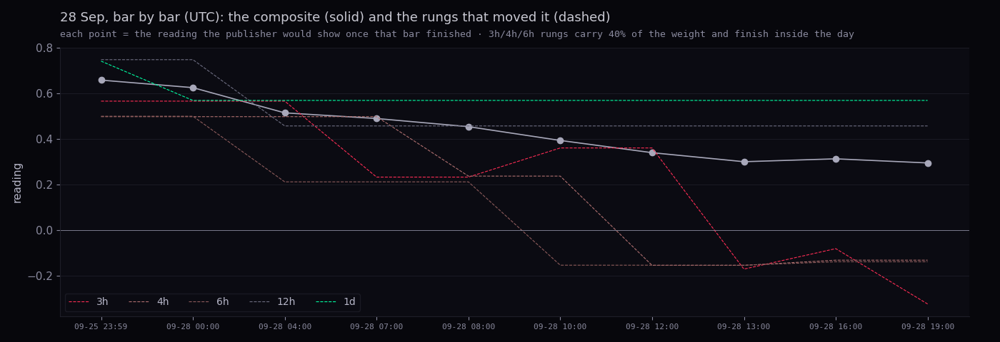
How unusual is a -0.36 day? Since mid-2013 (when all seven rungs exist) the composite's median close-to-close change is 0.13 in absolute terms; 19% of days move it by 0.30 or more. Today is the 88th percentile. SPY's own day explains 51% of the composite's daily change (slope +0.15 per 1%); for a −0.74% day the fitted change is -0.12. The other 0.24 came from where the intraday momentum was standing on Friday (near its ceiling after four up days), not from the size of today's fall. That is the mechanic: the Geiger is a position in a range, and it moves most when it starts near an edge.
How many: every SPY close since July 2013, 3,331 of them, each with all seven rungs replayed from the bars that had finished by that close. The shape: the composite lives above zero 75% of the time, because SPY spends most of its life with its fan in order. Its median is +0.42; the 25th percentile is -0.00, the 10th -0.34, the 5th -0.51, the 1st -0.75; the 75th is +0.72, the 90th +0.84, the 95th +0.90. So "+0.29" is not "slightly bullish": it is a little under the middle of where SPY usually sits. QQQ today +0.41 is its 49th.
Reading it by decile (SPY's next 21 and 63 sessions, medians, base +1.51% and +3.84%):
| decile | composite from | to | days | next 21 median | next 63 median | next 21 up |
|---|---|---|---|---|---|---|
| 1 | -0.86 | -0.34 | 334 | +3.0% | +6.3% | 68% |
| 2 | -0.34 | -0.12 | 333 | +2.4% | +5.4% | 70% |
| 3 | -0.12 | +0.10 | 333 | +1.9% | +4.7% | 71% |
| 4 | +0.10 | +0.26 | 333 | +1.8% | +4.3% | 68% |
| 5 | +0.26 | +0.42 | 333 | +1.6% | +4.1% | 67% |
| 6 | +0.42 | +0.56 | 333 | +1.3% | +3.3% | 67% |
| 7 | +0.56 | +0.67 | 333 | +1.1% | +3.4% | 64% |
| 8 | +0.67 | +0.76 | 333 | +1.4% | +3.4% | 69% |
| 9 | +0.76 | +0.84 | 333 | +0.8% | +3.1% | 64% |
| 10 | +0.84 | +1.00 | 333 | +0.8% | +2.8% | 64% |
In plain words: low readings came before better months (the bottom decile's next 21 sessions were a median +3.0% against +0.8% for the top decile), which is mean reversion in an index that keeps rising, not a timing tool: the up-share is 64–71% in every decile. The Geiger's own history says where you are in the range; it does not say the direction of the next step.
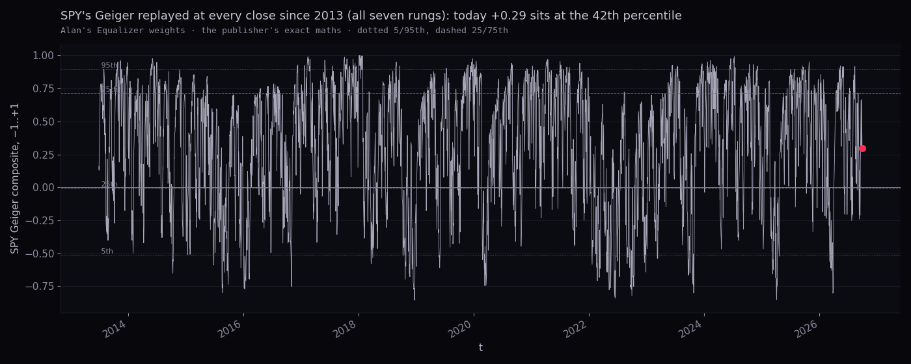
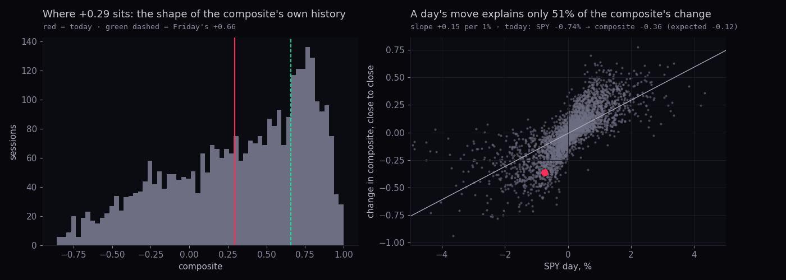
Definition (daily rung, where the history is long and clean): daily rung: TREND ≤ −0.5 (at most 2 of 8 fan pairs in order) AND MOMENTUM up ≥ 0.25 over 5 sessions AND momentum above trend; strong-weak = TREND ≥ +0.5 AND MOMENTUM ≤ −0.25. Rising market = close above its own 200-day average. Outcome = next 21 sessions, %.
| set | rising market · spells | next 21, median | base (any day, rising) | verdict | falling market · spells | next 21, median | base (falling) | verdict |
|---|---|---|---|---|---|---|---|---|
| QQQ | 8 | +6.0% [+4.3, +7.5] | +1.8% | LUCK-PROOF | 35 | +2.1% [+0.8, +2.5] | +3.2% | LUCK-PROOF |
| DIA | 14 | +3.9% [+3.5, +4.2] | +1.1% | LUCK-PROOF | 79 | +3.2% [+0.8, +4.2] | +2.3% | NOT SHOWN |
| IWM | 13 | -0.6% [-4.2, +1.6] | +1.0% | LEANING | 103 | +2.4% [+1.4, +4.2] | +2.4% | NOT SHOWN |
| SPY | 10 | +4.7% [+3.9, +5.0] | +1.3% | LUCK-PROOF | 79 | +2.4% [+0.0, +4.8] | +2.1% | NOT SHOWN |
| all 60 names pooled | 635 | +1.6% [+0.9, +2.4] | +1.0% | LEANING | 4286 | +1.4% [+0.7, +2.3] | +1.3% | NOT SHOWN |
| strong trend + weak momentum (Alan's screen), pooled | 4567 | +1.1% [+0.8, +1.4] | +1.0% | NOT SHOWN | 82 | +0.3% [-0.7, +1.5] | +1.3% | NOT SHOWN |
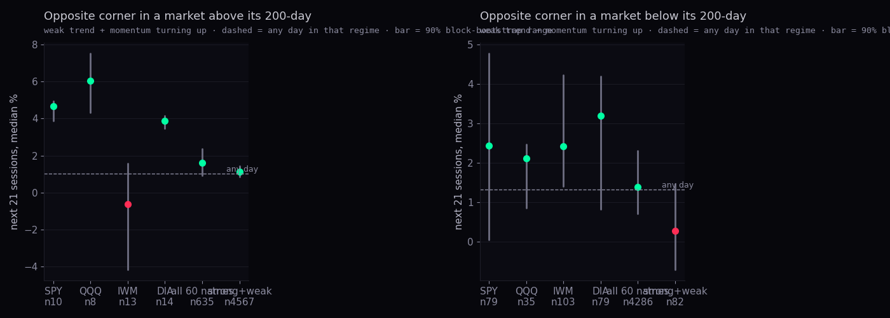
In plain words: pooled over 60 names, the opposite corner in a rising market was followed by a median +1.6% over 21 sessions against +1.0% for any rising-market day; in a falling market +1.4% against +1.3%. The edge, where there is one, is in the rising market, and it is the size of a normal month's noise. Alan's screen (strong trend, weak momentum: a pullback inside an uptrend) reads +1.1% in rising markets. The single-index rows have few spells (SPY 10 in a rising market) and should be read as lists.
The Hub's futures are ESUSD and NQUSD (FMP continuous contracts on the CME clock); the ticker ES in the served universe is Eversource Energy, a utility, and its Geiger (-0.75 tonight) has nothing to do with the S&P. The futures are not in the /geiger artifact; Station computes their bars' Geiger itself. Replaying the same maths on the chart API's futures bars tonight:
| rung | weight | ESUSD bars on the API (from) | fan lines ES / SPY | ESUSD composite | SPY composite | NQUSD bars (from) | fan lines NQ / QQQ | NQUSD composite | QQQ composite |
|---|---|---|---|---|---|---|---|---|---|
| 3h | 1.24 | 167 (2026-08-30) | 8 / 9 | -0.29 | -0.32 | 167 (2026-08-30) | 8 / 9 | -0.22 | +0.02 |
| 4h | 2.28 | 256 (2026-07-30) | 9 / 9 | -0.21 | -0.13 | 256 (2026-07-30) | 9 / 9 | -0.00 | +0.17 |
| 6h | 3.18 | 84 (2026-08-30) | 6 / 9 | -0.04 | -0.14 | 84 (2026-08-30) | 6 / 9 | +0.02 | +0.18 |
| 12h | 3.17 | 46 (2026-08-30) | 5 / 9 | +0.21 | +0.46 | 46 (2026-08-30) | 5 / 9 | +0.63 | +0.37 |
| 1d | 3.18 | 7510 (1997-09-09) | 9 / 9 | +0.60 | +0.57 | 6641 (2000-09-18) | 9 / 9 | +0.63 | +0.60 |
| 3d | 2.58 | 3511 (1997-09-08) | 9 / 9 | +0.80 | +0.76 | 3122 (2000-09-16) | 9 / 9 | +0.73 | +0.72 |
| 1w | 0.99 | 1516 (1997-09-07) | 9 / 9 | +0.86 | +0.83 | 1358 (2000-09-17) | 9 / 9 | +0.86 | +0.85 |
| weighted | +0.27 | +0.29 | +0.39 | +0.41 |
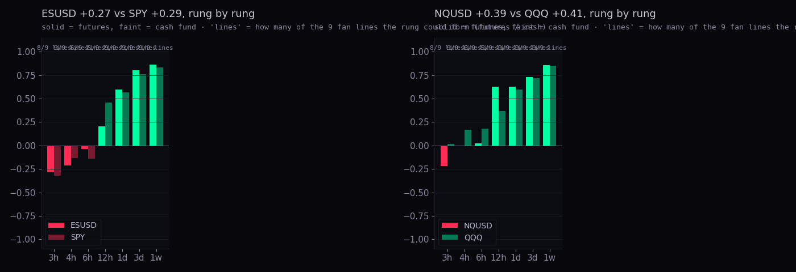
What the gap means. Three things, none of them "the futures know something": (1) the futures' intraday bars on the chart API start on 2026-08-30 (3h, 6h, 12h) and 2026-07-30 (4h), so their 12h rung has 46 bars and can only form 5 of the 9 fan lines, the 3h rung 8: a shorter fan swings between −1 and +1 on fewer pairs, and a 14-bar momentum on 12h futures bars looks back a week; (2) futures bars run on the CME clock (23 hours), so a "6h" bar contains the overnight session and the fan is anchored differently from SPY's cash-hours bars; (3) the daily rung is the fair comparison, and there the two agree: the daily-rung gap tonight is +0.03 for ES vs SPY and +0.03 for NQ vs QQQ, against a median absolute gap of 0.05 and 0.05 over the last 250 sessions. Until the futures' intraday histories are backfilled to 230 bars per rung, a futures Geiger above or below the cash fund is mostly a data-length artefact. That backfill is a keyed job for Fly (follow-up F2).
How many: 7,999 VIX sessions. The VIX's usual day (median absolute daily change over the prior 60 sessions, the Hub's USUAL DAY rule) is ±4.5%, so today is not a sigma day by the Hub's own 2× rule. A rise of at least 8.1% happens on 10% of days, about 25 times a year; among up days it is the 78th percentile. The level, 16.07, is the 37th percentile of the VIX since 1995: low.
What followed jumps like it:
| condition | spells | SPY next 1 | SPY next 5 | SPY next 21 | VIX next 5 (its own %) |
|---|---|---|---|---|---|
| VIX up ≥ 8% from a calm level (<20) | 388 | +0.16% [+0.04, +0.21] n387 · base +0.06 | +0.51% [+0.31, +0.62] n387 · base +0.37 | +1.4% [+1.1, +2.0] n384 · base +1.4 | -3.9% [-5.4, -2.7] n387 · base -0.9 |
| VIX up ≥ 2× its usual day, calm level | 448 | +0.11% [+0.04, +0.18] n448 · base +0.06 | +0.38% [+0.26, +0.54] n448 · base +0.37 | +1.4% [+1.0, +1.8] n447 · base +1.4 | -3.2% [-4.3, -2.0] n448 · base -0.9 |
| VIX up ≥ 8%, any level | 573 | +0.14% [+0.04, +0.20] n572 · base +0.06 | +0.54% [+0.41, +0.63] n572 · base +0.37 | +1.8% [+1.4, +2.1] n569 · base +1.4 | -5.1% [-6.9, -3.7] n572 · base -0.9 |
| VIX up ≥ 15%, calm level | 126 | +0.17% [-0.04, +0.26] n126 · base +0.06 | +0.37% [+0.02, +0.67] n126 · base +0.37 | +1.6% [+0.1, +2.3] n126 · base +1.4 | -7.9% [-9.4, -2.4] n126 · base -0.9 |
In plain words: a VIX jump of today's size from a calm level was followed by an ordinary SPY week and a VIX that gave back most of the jump within five sessions (median -3.9%). The bigger jumps (15%+) are the ones with a bounce attached, and even those sit inside their ranges.
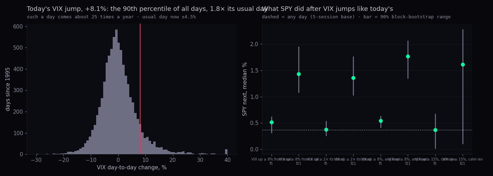
Cboe's total put/call (PCC) one-day print moves a median 0.09 from one day to the next, and one day's value correlates with the next at only 0.56; the five-day average moves 0.02 and correlates at 0.96. That is why the Hub's sentiment card averages five days: the single print is mostly noise from that day's expiries and index hedges. Intraday (the Hub's IBKR running totals) is noisier still and starts at 0.6 at 09:30 every day, as the put/call audit showed.
These are low readings: fewer puts per call than on 9 days out of 10 since 2006. Low put/call is complacency, and the studies below say complacent five-day readings were followed by ordinary returns, while fearful ones (five-day at its 80th–90th) were followed by better-than-base weeks. Today's regime is therefore the wrong one for a "fear bounce" rule; if a short-term adjustment is to be made it must lean on the VIX and the Geiger's speed, and section 3.3 shows those alone did not beat the base. The Hub's own 28 Sep reader ran during the session (index chains showed SPX put/call 1.34 at 13:57 ET); Cboe's 28 Sep print was not yet in the chart API at 23:00Z and is not used.
| condition | spells | SPY next 5 | SPY next 21 |
|---|---|---|---|
| PCC one-day ≥ 90th | 234 | +0.49% [+0.16, +0.83] n234 · base +0.38 | +1.9% [+1.3, +2.6] n234 · base +1.5 |
| PCC five-day ≥ 90th | 66 | +0.76% [+0.07, +1.17] n66 · base +0.38 | +2.4% [+1.4, +2.9] n66 · base +1.5 |
| PCC five-day ≥ 80th | 122 | +0.82% [+0.29, +1.02] n122 · base +0.38 | +1.1% [+0.6, +2.4] n122 · base +1.5 |
| PCC five-day ≤ 10th | 93 | +0.38% [+0.06, +0.70] n92 · base +0.38 | +1.2% [+0.5, +2.0] n92 · base +1.5 |
| equity PCCE 20-day ≤ 20th (froth) | 43 | -0.04% [-0.29, +0.34] n42 · base +0.38 | +0.6% [+0.5, +0.8] n42 · base +1.5 |
| equity PCCE five-day ≥ 90th | 71 | +0.73% [-0.20, +1.06] n71 · base +0.38 | +1.2% [-1.9, +2.4] n71 · base +1.5 |
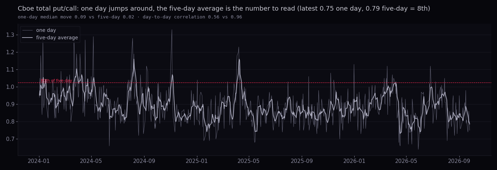
The three ingredients, written so a machine can test them:
Today: A (fear) is off (five-day put/call at the 8th); B (spike) is off (1.79× usual, the rule needs 2×); C (speed) is on (composite -0.36 on the day, still positive). So today matches "C with the Geiger still above zero" and nearly matches "B & C".
| cell | spells | SPY next 5 | up | SPY next 21 | up | survives FDR 10%? |
|---|---|---|---|---|---|---|
| A · put/call 5d ≥ 80th | 83 | +0.80% [+0.15, +0.96] n83 · base +0.40 | 64% | +0.8% [+0.4, +2.0] n83 · base +1.5 | 64% | no |
| A2 · put/call 5d ≥ 90th | 45 | +0.77% [+0.02, +1.17] n45 · base +0.40 | 62% | +2.4% [+0.8, +3.0] n45 · base +1.5 | 69% | no |
| B · VIX ≥ 2× usual up, calm | 277 | +0.37% [+0.21, +0.53] n277 · base +0.40 | 62% | +1.5% [+1.2, +2.0] n276 · base +1.5 | 69% | no |
| B2 · VIX ≥ +8% | 343 | +0.49% [+0.26, +0.63] n343 · base +0.40 | 61% | +1.9% [+1.4, +2.2] n340 · base +1.5 | 69% | no |
| C · Geiger fell ≥ 0.25 in a day | 398 | +0.38% [+0.26, +0.56] n397 · base +0.40 | 59% | +1.4% [+1.0, +2.0] n395 · base +1.5 | 67% | no |
| C2 · Geiger fell ≥ 0.35 in a day | 221 | +0.27% [-0.14, +0.50] n221 · base +0.40 | 54% | +1.2% [+0.6, +1.6] n220 · base +1.5 | 63% | no |
| A & B | 44 | +0.91% [+0.13, +1.42] n44 · base +0.40 | 64% | +1.9% [+1.5, +2.9] n44 · base +1.5 | 70% | no |
| B & C | 193 | +0.35% [+0.13, +0.54] n193 · base +0.40 | 60% | +1.3% [+0.9, +1.8] n192 · base +1.5 | 66% | no |
| A & C | 56 | +0.25% [-0.81, +0.94] n56 · base +0.40 | 52% | +1.3% [+0.8, +1.7] n56 · base +1.5 | 68% | no |
| A & B & C | 31 | +0.46% [-0.89, +1.10] n31 · base +0.40 | 58% | +1.7% [+1.2, +2.7] n31 · base +1.5 | 68% | no |
| B & C, Geiger still > 0 (today's shape) | 100 | +0.36% [+0.17, +0.57] n100 · base +0.40 | 61% | +1.2% [+0.5, +1.5] n100 · base +1.5 | 62% | no |
| C & Geiger still > 0 | 242 | +0.38% [+0.26, +0.58] n241 · base +0.40 | 61% | +1.2% [+0.6, +1.6] n239 · base +1.5 | 64% | no |
| A2 & B2 | 40 | +0.75% [+0.07, +1.30] n40 · base +0.40 | 68% | +2.7% [+1.4, +3.8] n40 · base +1.5 | 70% | no |
| B2 & C2 | 151 | +0.31% [-0.16, +0.57] n151 · base +0.40 | 54% | +1.3% [+0.8, +1.7] n150 · base +1.5 | 62% | no |
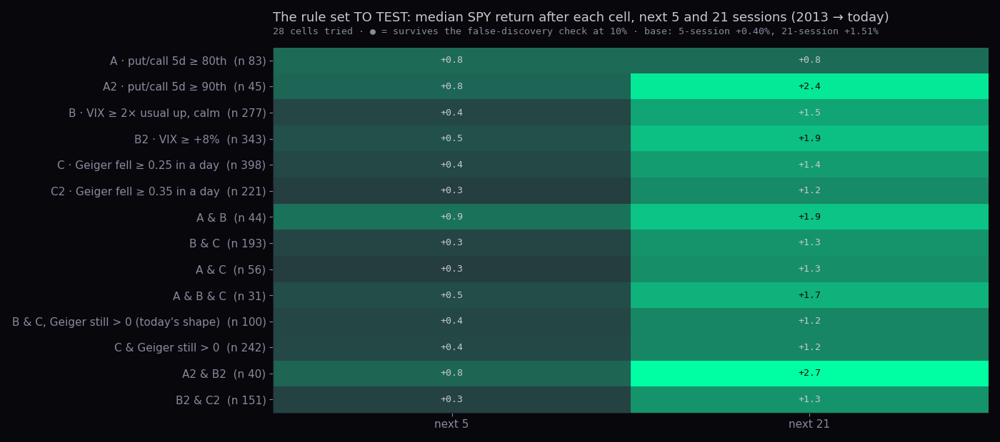
What the grid says. 28 cells were tried on since 2013-07 (all seven Geiger rungs exist). The fear cells (A, A2, A&B) have the highest medians (five-day put/call at its 90th followed by a median +2.4% over 21 sessions against +1.5%), but with 45 to 83 spells their ranges are wide and none survives the false-discovery check. The speed cells (C, C2) sit at or below the base: a fast Geiger drop is a description of the last two days, not a forecast. The rule set worth keeping for a test is the fear-plus-spike pair (A & B, or A2 & B2), tested forward from here on a fixed protocol: it is the only combination whose whole 90% range sat above zero at 21 sessions, and it is not on today.
Sources: chart API daily bars (SPY, VIX to 25 Sep; today's VIX from Alan's screen, the API's 30-minute bars agree on the 16.58 high and read 16.10 at the last bar); chart API PCC/PCCE/PCCI (Cboe printed daily ratios since 2006); the SPY Geiger composite replayed from section 2. What could be wrong: put/call is joined by date to the VIX/Geiger of the same day, so a "fear" print is known only after that close; the window is 13 years, one and a half cycles.
Our fund histories start in September 2003, so the 1995, 1998 and 2001 first cuts are outside the data; that leaves 3 cases. Each is the fund minus SPY, in points, from the day of the cut:
| first cut | XLF − SPY: 21 · 63 · 126 · 252 sessions | KRE − SPY | KBE − SPY | IYF − SPY |
|---|---|---|---|---|
| 2007-09-18 · 2007 (50bp, before the crisis) | -3.4 · -12.0 · -14.6 · -23.4 | -9.9 · -14.8 · -9.3 · -0.1 | -7.3 · -14.1 · -13.1 · -18.3 | -3.6 · -11.0 · -12.2 · -19.0 |
| 2019-07-31 · 2019 (25bp, mid-cycle) | -3.4 · +0.2 · -1.9 · -23.9 | -7.7 · -1.7 · -9.9 · -40.1 | -7.2 · -1.0 · -9.4 · -39.0 | -0.9 · +0.3 · -1.5 · -20.2 |
| 2024-09-18 · 2024 (50bp) | +1.6 · +1.0 · +9.0 · +0.7 | +1.9 · +3.4 · -0.5 · -6.8 | +2.0 · +1.5 · -0.5 · -5.6 | +2.5 · +1.4 · +8.4 · +4.1 |
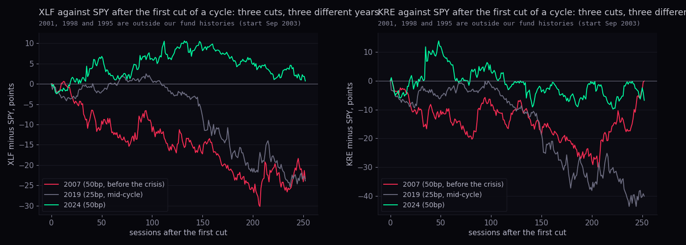
In plain words: three cuts, three different worlds. 2007's cut was the start of the crisis and financials lost 23 points to the index in a year; 2019's and 2024's were mid-cycle insurance cuts: financials tracked the index within a few points for six months, and then 2019's year ran into the 2020 crash (XLF −24 points at 252 sessions, KRE −40) while 2024's ended flat. On any random 252-session window since 2003 XLF minus SPY is a median -2.6 points and positive 38% of the time. Thesis status: untestable on our data (n = 3), and the three cases disagree. What the cut does say is why it was made; the playbook test to keep is "first cut with credit calm (HYG−LQD spread not widening) vs first cut with credit stressed", which needs the 1990s cases from an index-level source (follow-up F4).
For XLU, XLRE, VNQ and VPU: the first day RSI(14) sits in its own bottom 1% (and bottom 5%), split by whether the 10-year had already fallen over the prior 10 sessions, and, as a hindsight best case, by whether yields then fell over the next 21. Outcome is the fund's next 63 sessions.
| fund · RSI today (own pct) · bottom-1% line | bottom 1% | bottom 5% | bottom 5%, 10-year already falling | bottom 5%, 10-year still rising | bottom 5%, yields then fell (hindsight) |
|---|---|---|---|---|---|
| XLU · RSI 23 (0th) · 26 | +4.2% [+1.2, +5.5] n31 · base +2.4 spells 32 | +2.8% [+1.7, +3.6] n100 · base +2.4 spells 106 | +2.7% [+1.5, +2.9] n46 · base +2.4 spells 47 | +3.3% [+2.9, +4.1] n77 · base +2.4 spells 82 | +3.7% [+2.7, +4.5] n57 · base +2.4 spells 57 |
| XLRE · RSI 23 (0th) · 26 | +6.5% [+4.3, +7.1] n19 · base +1.4 spells 20 | +3.5% [+2.8, +5.6] n46 · base +1.4 spells 49 | +6.2% [+6.0, +6.5] n14 · base +1.4 spells 14 | +3.3% [+2.6, +3.5] n37 · base +1.4 spells 40 | +5.1% [+4.5, +6.4] n24 · base +1.4 spells 24 |
| VNQ · RSI 26 (1st) · 27 | +5.3% [+4.0, +5.9] n38 · base +2.1 spells 39 | +3.4% [+2.2, +4.0] n111 · base +2.1 spells 115 | +5.9% [+4.1, +7.9] n51 · base +2.1 spells 51 | +2.5% [+1.8, +3.6] n70 · base +2.1 spells 74 | +4.0% [+3.3, +5.4] n62 · base +2.1 spells 62 |
| VPU · RSI 23 (0th) · 26 | +6.2% [+1.3, +7.9] n35 · base +2.4 spells 36 | +3.0% [+2.2, +4.1] n101 · base +2.4 spells 107 | +3.3% [+1.9, +3.9] n44 · base +2.4 spells 45 | +3.3% [+2.6, +4.2] n80 · base +2.4 spells 85 | +4.3% [+3.2, +5.0] n54 · base +2.4 spells 54 |
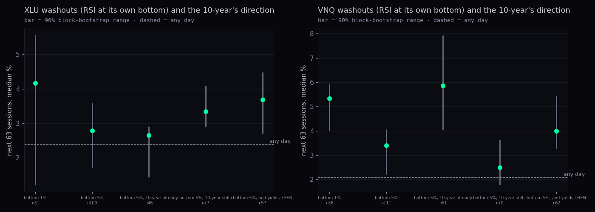
In plain words: washed-out rate-sensitive funds bounced in every fund and every split, by 3 to 6 points over 63 sessions against a base of 1 to 2½; the whole 90% range clears the base for XLRE and VNQ (luck-proof), while XLU and VPU lean the same way with ranges that reach down to the base. Whether the 10-year had already turned did not sort the outcomes cleanly (VNQ and XLRE did better when yields were already falling, XLU and VPU did not care). The hindsight column shows the ceiling of the thesis: even knowing yields would fall added only a point or two. Today XLU and XLRE are in their bottom 1% of RSI (23 and 23) with the 10-year at a ten-year high: this is the setup the thesis describes, and the history says "bounce more likely than not, size unknown".
Narrow = RSP ÷ SPY fell over 63 sessions by more than its bottom fifth (-1.9%); rising rates = the 10-year rose over 63 sessions by more than its top fifth (31bp). Today: breadth -4.7% (narrow), 10-year +81bp (rising). Outcome = next 63 sessions, fund minus fund, in points.
| regime | days | Dow − S&P | Nasdaq − S&P | Dow − Nasdaq |
|---|---|---|---|---|
| narrow & rising rates (today's kind) | 170 | +0.8 pts [-0.2, +1.7] n164 · base -0.5 | +0.7 pts [-2.2, +2.0] n164 · base +1.5 | +0.4 pts [-1.9, +3.7] n164 · base -1.9 |
| narrow, rates not rising | 660 | -0.8 pts [-1.6, +0.4] n652 · base -0.5 | +0.7 pts [-0.3, +1.9] n652 · base +1.5 | -1.6 pts [-3.5, +0.4] n652 · base -1.9 |
| broad (not narrow) | 3380 | -0.5 pts [-1.0, -0.2] n3331 · base -0.5 | +1.6 pts [+0.9, +2.2] n3331 · base +1.5 | -2.0 pts [-2.9, -1.1] n3331 · base -1.9 |
| rising rates, any breadth | 840 | -0.4 pts [-0.9, +0.2] n818 · base -0.5 | +1.3 pts [-0.6, +2.3] n818 · base +1.5 | -1.7 pts [-3.3, +0.6] n818 · base -1.9 |
| all days | 4210 | -0.5 pts [-0.9, -0.2] n4147 · base -0.5 | +1.5 pts [+0.9, +1.9] n4147 · base +1.5 | -1.9 pts [-2.7, -1.1] n4147 · base -1.9 |
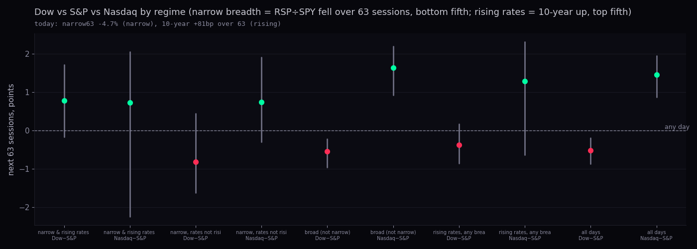
In plain words: across 2003 → today the Nasdaq beat the S&P by a median +1.5 points a quarter and the Dow lagged by -0.5. In the narrow-and-rising-rates regime (170 days, a handful of spells) the Dow did better than its usual (+0.8) and the Nasdaq worse than its usual (+0.7), which is the thesis, but both ranges include zero and the days come from three or four episodes (2005–06, 2018, 2022, now). Thesis status: leaning the right way, not proven.
| name | beta to SPY | on SPY days ≤ −1.5%: own median · beat SPY · up | on SPY months ≤ −3%: own median · beat SPY | today: under year high · sessions since · RSI · 63d vs SPY | fast 10% drop from year high: spells · next 63 · next 126 |
|---|---|---|---|---|---|
| WMT | 0.52 | -1.18% (SPY -2.14%) · 87% · 16% | -1.6% (SPY -5.9%) · 80% | -19% · 90 · 52 · -8.4 pts | 17 · +3.1% [+3.0, +5.4] n17 · base +2.1 · +2.6% [+2.6, +2.6] n15 · base +3.6 |
| COST | 0.69 | -1.53% (SPY -2.14%) · 77% · 11% | -2.6% (SPY -5.9%) · 76% | -16% · 90 · 52 · -5.8 pts | 20 · +5.5% [+4.8, +5.9] n20 · base +4.4 · +3.7% [+3.4, +3.7] n19 · base +8.5 |
| XLP | 0.55 | -1.25% (SPY -2.14%) · 91% · 6% | -3.2% (SPY -5.9%) · 83% | -9% · 146 · 41 · -5.8 pts | 7 · +7.4% [+7.4, +7.4] n7 · base +2.0 · +13.0% [+13.0, +13.0] n7 · base +3.8 |
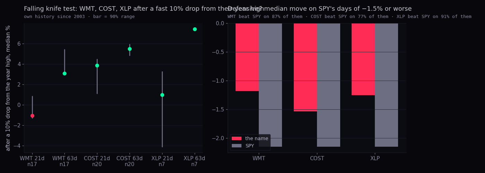
In plain words: on SPY's bad days WMT and COST fall about half as much and beat the index four times in five: that is what "defensive" measures, and it holds. Their own fast drops (10% off the year high within 15 sessions, 17 and 20 times since 2003) were followed by above-base returns over 63 and 126 sessions, so historically their knives were caught. But today is not that pattern: both are 90 sessions past their high, sliding 19% and 16% slowly while the index rose, which is a de-rating (a leadership rotation out of expensive staples), not a knife. The defensive test still passes; the knife test does not apply.
Point-in-time top-20 names by full market cap at each prior year-end (N9 cache, 400 name-years, 2007 → 2026). State on each day: below its own 200-day while SPY is above its 200-day; "still leading" = its 63-session return beats SPY's. Outcome = the name minus SPY over the next 63 and 126 sessions; the unit is the first day of each run per name.
| state | share of leader-days | spells | next 63 minus SPY | up | next 126 minus SPY |
|---|---|---|---|---|---|
| leader below its 200-day, market above, still leading over 63d | 2% | 295 | +0.4 pts [-0.4, +0.7] | 52% | -0.1 pts [-1.9, +2.1] |
| leader below its 200-day, market above, no longer leading | 18% | 877 | -0.7 pts [-1.5, +0.3] | 47% | -1.4 pts [-2.6, +0.1] |
| leader above its 200-day, market above | 58% | 937 | -0.7 pts [-1.4, -0.2] | 47% | -1.7 pts [-2.5, -0.7] |
| leader below its 200-day, market below | 16% | 569 | -1.8 pts [-2.8, -1.0] | 42% | -1.8 pts [-2.9, -1.1] |
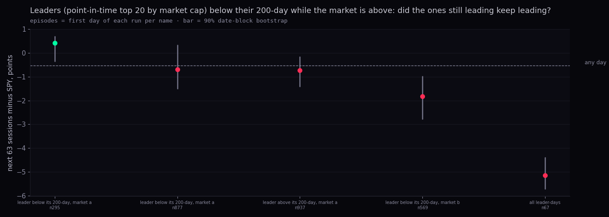
In plain words: a leader that dipped below its 200-day while the market stayed above, but was still ahead of the index over the past quarter, went on to beat SPY by a median +0.4 points over the next 63 sessions (base for all leader-days -0.5); the same dip in a leader that had already stopped leading was followed by -0.7. The 200-day is not the tell; the relative strength is. Today, of this year's top 20 as of 25 Sep, AVGO (-7 pts vs SPY over 63), TSLA (-5 pts vs SPY over 63), WMT (-10 pts vs SPY over 63), ORCL (-11 pts vs SPY over 63) are below their 200-day, and every one of them has also stopped leading: the history says "no reason to expect them back on relative strength alone".
Sources: chart API daily bars; N9 point-in-time cache (membership from FMP, caps from FMP month-ends, bars from Massive, built on Fly on 28 Sep); US10Y from the chart API's FMP macro series. What could be wrong: the rate cycles are three; "narrow" and "rising" thresholds are this sample's own fifths; the knife definition (10% within 15 sessions of the high) is one of many.
The reports. Vistra has missed consensus EPS on 28 of its last 38 reports (FMP export). The misses are not operating misses: the reported figure carries the mark-to-market of its hedge book (Q4 2025 net income $944m included an $808m unrealised hedge loss), so GAAP EPS swings with forward power curves while adjusted EBITDA, the number the company guides on, has run at or above plan. Full-year 2025 ongoing adjusted EBITDA was $5,912m; 2026 guidance is $6.8bn to $7.6bn, reaffirmed in Q1 and Q2 2026 with "at or above the midpoint"; the 2027 midpoint opportunity is $7.4bn to $7.8bn. Q2 2026 (7 Aug): revenue $4.02bn (−5.5% y/y), adjusted EBITDA $1.77bn (+30% y/y), EPS $0.76 vs $1.61 expected. Q1 2026 (7 May): adjusted EBITDA $1.494bn, revenue $5.64bn (in line), EPS $2.87 vs $1.32.
The deals. AWS: ~3,800 MW of nuclear (Comanche Peak 20-year PPA up to 1,200 MW plus related facilities, and the 200 MW Oak Hill solar PPA). Meta: 20-year PPAs for more than 2,600 MW across the PJM nuclear fleet. Cogentrix: ~5,500 MW of gas generation for $4.7bn, closing mid-to-late 2026. Lotus Infrastructure: 2,600 MW closed November 2025. Up to $1bn committed to the Helix data-centre platform. Management said Cogentrix and the Meta PPAs alone could add about $700m to the 2027 EBITDA midpoint, and neither is in guidance yet.
Why it fell anyway. Two reasons in the reports and the coverage: ERCOT forward power curves came in "meaningfully lower" (Vistra's Texas fleet is merchant), and management guided toward the low end of the 2027 range on the call. The whole independent-power group fell together (Constellation −21% YTD, NRG −30%, Talen −21%), so this is a sector de-rating of the AI-power trade more than a Vistra story. Analysts: mean target about $225 (67% above the price) with a street high of $320; 18 buys, 1 underperform, 1 sell; Guggenheim (Pourreza) $300; fair-value estimates have drifted down (about $314 → $308) and there were six downward 2027 EPS revisions in a month.
Reaction history (own bars; before-open reports move the same day): misses were followed by a median day of -0.6%, beats +0.2%; the surprise size correlates with the reaction at -0.18, which is to say the headline miss is not what moves it. Last reports:
| date | EPS actual | estimate | surprise | day's move | next 21 sessions |
|---|---|---|---|---|---|
| 2024-11-07 BMO | 5.4 | 1.2 | +350% | +7.6% | +9.3% |
| 2025-02-27 BMO | 1.14 | 0.85 | +34% | -12.3% | -8.4% |
| 2025-05-08 BMO | -0.93 | 0.536 | -274% | +1.0% | +20.2% |
| 2025-08-06 BMO | 0.81 | 0.875 | -7% | -4.2% | -6.4% |
| 2025-11-06 BMO | 1.75 | 2.08 | -16% | -2.5% | -10.0% |
| 2026-02-26 BMO | 0.543 | 2.31 | -76% | +0.8% | -12.1% |
| 2026-05-07 BMO | 2.87 | 1.32 | +117% | -2.7% | -4.6% |
| 2026-08-07 BMO | 0.76 | 1.61 | -53% | -0.6% | +7.9% |
Falling-knife test on its own history (VST's bars start 2017-05-10; first day at least 20%, 30% or 40% under its year high after having been within 5% of it in the prior 60 sessions):
| depth | spells (dates) | next 63 (each) | next 126 (each) | next 252 (each) | further fall within 126 (each) | base next 63 · up |
|---|---|---|---|---|---|---|
| -20% | 21 (2019-07-22, 2019-07-26, 2019-07-31, 2020-01-27, 2020-02-06, 2020-02-26, 2021-02-26, 2021-03-11, 2022-07-05, 2024-06-17, 2024-07-17, 2024-08-26, 2024-12-18, 2025-01-27, 2025-02-21, 2025-11-13, 2025-11-20, 2025-11-25, 2025-12-01, 2025-12-05, 2025-12-12) | +24%, +24%, +26%, -12%, -17%, -7%, -7%, -3%, -1%, +8%, +68%, +91%, +2%, -5%, +3%, +1%, -1%, +2%, -6%, -2%, -3% | +5%, -0%, +4%, -16%, -13%, -12%, +7%, +0%, +3%, +73%, +128%, +53%, +40%, +44%, +27%, -20%, -5%, -6%, -11%, -12%, -7% | -11%, -16%, -12%, -4%, -3%, +5%, +27%, +20%, +24%, +120%, +147%, +132%, +22%, +21%, +14% | -1%, -1%, 0%, -42%, -42%, -42%, -8%, -15%, -3%, -18%, -9%, -13%, -26%, -28%, -35%, -20%, -22%, -21%, -22%, -19%, -21% | +4.9% · 61% |
| -30% | 8 (2021-03-03, 2021-05-04, 2024-07-24, 2024-08-02, 2024-08-07, 2025-02-27, 2025-03-25, 2026-01-08) | +2%, +16%, +72%, +72%, +65%, +23%, +41%, +3% | +16%, +23%, +163%, +132%, +126%, +51%, +53%, +5% | +35%, +55%, +170%, +177%, +171%, +28%, +16% | -3%, -2%, -5%, -3%, -0%, -25%, -26%, -11% | +4.9% · 61% |
| -40% | 4 (2025-03-06, 2025-04-03, 2025-04-10, 2025-04-21) | +49%, +79%, +78%, +78% | +64%, +87%, +80%, +82% | +43%, +42%, +50%, +46% | -14%, -9%, -2%, 6% | +4.9% · 61% |
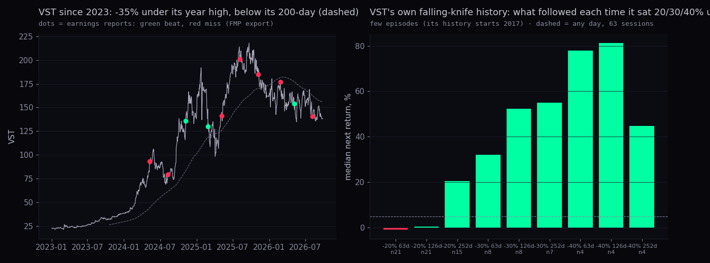
In plain words: VST is 35% under a high it set 238 sessions ago, so it is not in the fast-knife state (it was last within 5% of its high more than 60 sessions ago: near-high-recent = False); it is a long slide with a broken 200-day and a Geiger trend of -0.91. Its own history has 8 spells at 30% under the high, and they were followed by +16%, +23%, +163%, +132%, +126%, +51%, +53%, +5% over 126 sessions, with further falls of -3%, -2%, -5%, -3%, -0%, -25%, -26%, -11% first. The fundamental picture (contracted nuclear and gas capacity at 20-year terms, guidance intact) and the price picture (a merchant-power de-rating) are both true at once; the price is what is falling, and the history of two or three spells cannot settle it. Thesis status: the misses are accounting noise, the de-rating is real, and the entry question is a tranche question (section 4 of the pullback playbook), not a knife question.
Why (from today's coverage): Oracle invoked force majeure on the 2.45 GW Project Jupiter data centre in New Mexico over permitting, environmental and gas-pipeline delays, which put the project's debt under rating pressure; S&P has Oracle at BBB− with long bond yields above 8% and CDS at records; a new round of workforce cuts; Larry Ellison raised his pledged shares by 19% to 67 million (over $9bn); and the wider AI-capex worry (Burry on hyperscaler commitments, Oracle's $664bn in the mix). The day's move was −3.3% on the chart API's finished bar (the press says −3.3% to −3.6%). Average analyst target quoted at $246.48 against $132.60.
Own history: after a day of −3% or worse ORCL's next 21 sessions were a median +1.7% (228 spells since 2003); when it was already below its 200-day, +3.0%; when it was already 25% or more under its year high, +4.5% (78 spells, mostly 2000s). Those are bounces inside a fall; the ranges are wide and the stock is 58% off its high for a reason that is about credit and execution, which price history does not measure.
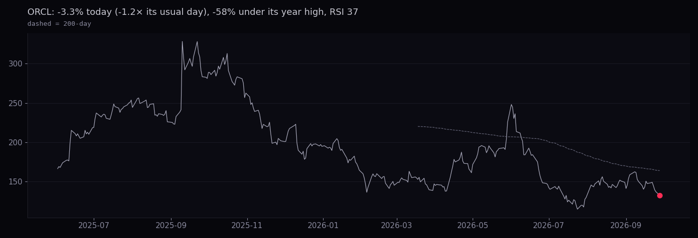
| name | today | YTD | one year | RSI | Geiger | closest fund (correlation) | tree cohort (24 Sep taxonomy) |
|---|---|---|---|---|---|---|---|
| MDB | -18.5% | -20% | +6% | 37 | -0.23 | SKYY (0.67) | Technology:Software - Infrastructure, branch AI_SOFTWARE |
| HOOD | -2.5% | +3% | -5% | 54 | +0.19 | QQQ (0.62) | Financial Services:Financial - Capital Markets, branch CRYPTO_EQUITIES |
| SHOP | +1.2% | -11% | +0% | 55 | +0.36 | SKYY (0.64) | Technology:Software - Application, branch AI_SOFTWARE |
| ORCL | -3.3% | -32% | -54% | 37 | -0.69 | SKYY (0.60) | Technology:Software - Infrastructure, branch AI_SOFTWARE |
| CRM | -2.9% | -14% | -6% | 45 | -0.23 | IGV (0.75) | Technology:Software - Application, branch AI_SOFTWARE |
| SNOW | -2.3% | +50% | +48% | 50 | +0.17 | SKYY (0.63) | Technology:Software - Application, branch AI_SOFTWARE |
| APP | -0.8% | -54% | -52% | 42 | -0.64 | IGV (0.52) | Technology:Software - Application, branch AI_SOFTWARE |
| NFLX | -2.7% | -26% | -43% | 33 | -0.74 | XLC (0.50) | Communication Services:Entertainment, branch AI_SOFTWARE |
| LYFT | +0.1% | -23% | -31% | 38 | -0.42 | SKYY (0.46) | Technology:Software - Application, branch AI_SOFTWARE |
| bucket, equal weight | -3.5% | -11% | -12% | IGV (0.88), SKYY 0.88, XLK 0.67, QQQ 0.69 | branch AI_SOFTWARE (all nine) | ||
| IGV | -0.5% | -0% | -7% | 52 | +0.23 | iShares Expanded Tech-Software · the fund to read for this bucket | |
| SKYY | -1.3% | +25% | +21% | 52 | +0.30 | First Trust Cloud Computing · closest for the cloud/data names | |
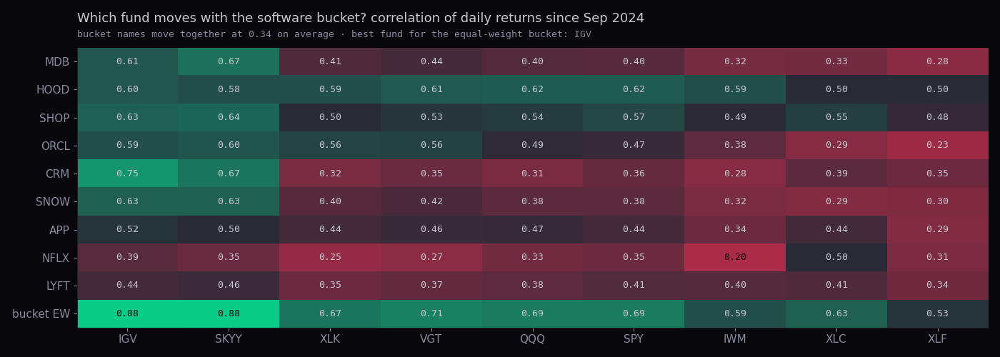
In plain words: the fund that measures this bucket is IGV; SKYY is the closest fund for the cloud and data names (MDB, SNOW, SHOP, ORCL, LYFT), NFLX belongs with XLC and HOOD with QQQ. On the tree the nine share the AI_SOFTWARE branch but four industries. Their pairwise correlation is only 0.34 (minimum 0.16), so as a cohort they would fail the tree-cohorts lane's co-movement bar (0.5+): it is a theme list ("software that AI may eat or feed"), and the equal-weight bucket is down 11% this year against IGV's -0% and SKYY's +25%. The measurement to add to the Hub is a light one: an equal-weight bucket line beside IGV on the Cohort Compare bow tie (follow-up F6).
Sources: chart API daily bars; FMP earnings export with estimates (26–27 Sep lanes); public coverage fetched 28 Sep 23:00Z: Vistra Q4-2025 8-K exhibit (sec.gov), TIKR on Q1 2026, Yahoo/Insider Monkey on the Guggenheim call and Q2 2026, Simply Wall St fair value; ORCL: tradingkey, gurufocus, invezz (the last two gave us only headlines). What could be wrong: press figures for ORCL's move vary (−3.3% to −3.6%); analyst counts are as quoted by those sources, not from FMP; VST's own history is nine years.
STOLEN FROM
Lo, Mamaysky & Wang (2000), Foundations of Technical Analysis, NBER w7613 / J. Finance 55(4) · Harvey & Liu (2015), Backtesting, J. Portfolio Management 42(1) · Harvey, Liu & Zhu (2016), … and the Cross-Section of Expected Returns, RFS
What the paper does. It makes "chart patterns" testable: smooth the price with a kernel regression (a weighted moving average whose weights fall off with distance in days), find the local highs and lows of the smoothed curve, define ten patterns as conditions on the last five of them (head-and-shoulders and its inverse, broadening tops and bottoms, triangle tops and bottoms, rectangle tops and bottoms, double tops and bottoms), then ask one question: is the distribution of returns on the days after a pattern the same as the distribution on all days? They used a 38 days sliding by 1 (l = 35, d = 3) window, chose the bandwidth by cross-validation and shrank it by 0.3 because the cross-validated curve was too smooth to show patterns, and tested with the Kolmogorov–Smirnov statistic. Their finding on 1962–96 US stocks: several patterns' conditional return distributions differ from the unconditional one, most clearly on Nasdaq stocks, but the differences are in shape and they do not claim the patterns are profitable.
What we did, the same way: 38 days sliding by 1 (l = 35, d = 3); bandwidth grid 2..10 days by CV, ×0.3; a pattern seen again within 20 days is the same event; 60 names (SPY, QQQ, IWM, DIA and the equities and sector funds in this lane's cache) since 2003; the paper's ten definitions with its 1.5% and 0.75% tolerances; the paper's test (one-day standardised return three days after completion, KS against all days, Bonferroni across the ten) and, because that is what we would trade, the next 21 sessions after completion against all days. Median cross-validated bandwidth 2.0 days (× 0.3 for the fit).
| pattern | found | per name per year | mean one-day return after (z) | KS p (one-day, paper's test) | Bonferroni p | next 21 median · up | base next 21 · up | KS p (21-day) | SPY's latest |
|---|---|---|---|---|---|---|---|---|---|
| HS | 5,258 | 3.8 | +0.003 | 0.3691 | 1.000 | +1.0% · 59% | +1.1% · 60% | 0.000 | 2026-07-21, 2026-08-21 |
| IHS | 5,228 | 3.8 | -0.013 | 0.0581 | 0.581 | +0.9% · 60% | +1.1% · 60% | 0.000 | 2026-06-17, 2026-08-24 |
| BTOP | 1,822 | 1.3 | +0.002 | 0.0501 | 0.501 | +1.1% · 60% | +1.1% · 60% | 0.449 | 2025-12-24, 2026-09-03 |
| BBOT | 1,490 | 1.1 | +0.106 | 0.0000 ● | 0.000 | +1.5% · 65% | +1.1% · 60% | 0.000 | 2025-11-20, 2026-09-10 |
| TTOP | 1,473 | 1.1 | +0.002 | 0.0026 ● | 0.026 | +1.1% · 59% | +1.1% · 60% | 0.301 | 2026-02-20, 2026-06-18 |
| TBOT | 1,759 | 1.3 | +0.052 | 0.0000 ● | 0.000 | +0.7% · 57% | +1.1% · 60% | 0.000 | 2025-01-29, 2026-02-23 |
| RTOP | 2,727 | 2.0 | -0.089 | 0.0000 ● | 0.000 | +0.8% · 59% | +1.1% · 60% | 0.000 | 2026-01-06, 2026-02-25 |
| RBOT | 2,633 | 1.9 | +0.022 | 0.0000 ● | 0.000 | +0.7% · 60% | +1.1% · 60% | 0.000 | 2026-07-20, 2026-08-20 |
| DTOP | 6,084 | 4.4 | -0.003 | 0.3747 | 1.000 | +1.0% · 60% | +1.1% · 60% | 0.017 | 2026-07-30, 2026-08-28 |
| DBOT | 6,062 | 4.4 | +0.005 | 0.2315 | 1.000 | +1.0% · 59% | +1.1% · 60% | 0.038 | 2026-07-24, 2026-08-27 |
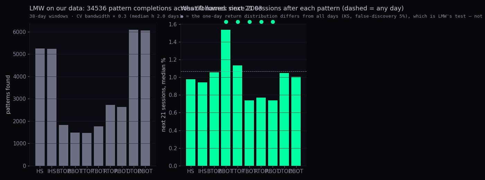
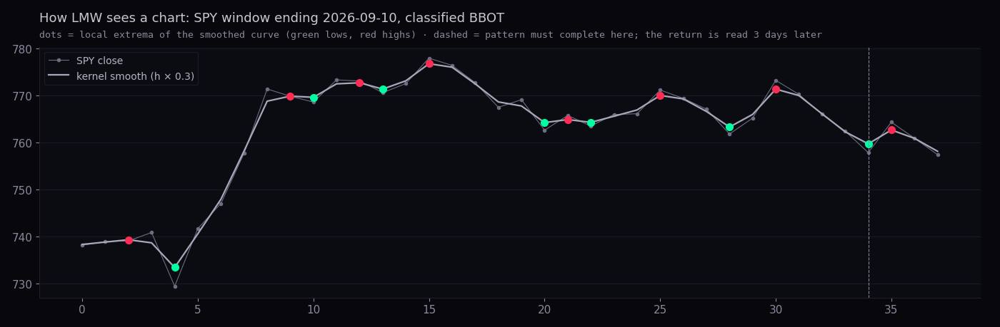
In plain words: the finder works and finds what the paper found: patterns are common (a few per name per year), and for 5 of the ten the day-after return distribution differs from all days at the paper's level (● after Benjamini–Hochberg at 5%). But the difference is in the shape of the distribution, not in its middle: the mean one-day returns after every pattern are within a few hundredths of a standard deviation of zero, and the next-21-session medians sit within a point of the base with the same up-share. So on our data, as in the paper, head-and-shoulders and friends carry information about volatility and skew, not about direction. What is worth keeping is the machinery: a kernel-smoothed extrema finder is a clean, testable replacement for hand-drawn support, resistance and diagonals on Station (follow-up F5).
What the paper does. A Sharpe ratio measured on a backtest is a t-statistic in disguise (t = SR × √years). If the rule was one of M rules tried, the chance that the best of M looks this good by luck is much higher than the raw p-value says, so the p-value is adjusted (Bonferroni multiplies it by M; Holm and BHY are less severe and use the whole set of p-values) and converted back to a Sharpe. The "haircut" is the share of the Sharpe that does not survive. Their rule of thumb: with the number of tests the profession has run, a strategy needs t near 3 before it deserves belief.
What we did: t = SR·√years; p two-sided normal; Bonferroni p·M; Holm and BHY on the study's own p-values where we have them; haircut = 1 − SR_adjusted / SR (Harvey & Liu 2015, 'Backtesting', JPM 42(1)). For each rule, the Sharpe is that of "hold the instrument for the stated sessions after each signal, otherwise cash", on our bars; M is the number of cells the study tried; Holm and BHY use the study's own p-values where this lane produced them.
| rule | from | Sharpe | years | signals | t | p | tests M | Bonferroni: p · Sharpe left · haircut | Holm | BHY |
|---|---|---|---|---|---|---|---|---|---|---|
| RSI ladder · SPY RSI in its bottom 10% → hold 20 sessions | rsi-ladder (28 Sep) | 0.43 | 23 | 182 | 2.08 | 0.038 | 400 | 1.000 · 0.00 · 100% | — | — |
| P5 trend rule · 10-month (Faber) on the S&P 500 since 1928 (their Sharpe 0.53) | research-round-2 P5 | 0.53 | 98 | 73 | 5.20 | 0.000 | 340 | 0.000 · 0.40 · 23% | 0.40 · 23% | 0.40 · 25% |
| P5 trend rule · 200-day on the S&P 500 since 1928 (their Sharpe 0.55) | research-round-2 P5 | 0.55 | 98 | 294 | 5.43 | 0.000 | 340 | 0.000 · 0.43 · 21% | 0.43 · 21% | 0.41 · 24% |
| Q3 · put/call five-day ≥ 80th → hold SPY 21 sessions | this lane | 0.23 | 23 | 122 | 1.12 | 0.263 | 29 | 1.000 · 0.00 · 100% | 0.00 · 100% | 0.00 · 100% |
| Q3 · VIX ≥ 2× usual day up from under 20 → hold SPY 5 sessions | this lane | 0.36 | 23 | 448 | 1.71 | 0.087 | 29 | 1.000 · 0.00 · 100% | 0.00 · 100% | 0.00 · 100% |
| Q2 · opposite corner on SPY in a rising market → hold 21 sessions | this lane | 0.47 | 23 | 10 | 2.24 | 0.025 | 14 | 0.354 · 0.19 · 59% | 0.24 · 49% | 0.25 · 46% |
| Q4 · XLU RSI in its bottom 5% → hold XLU 63 sessions | this lane | 0.36 | 23 | 106 | 1.73 | 0.084 | 41 | 1.000 · 0.00 · 100% | 0.00 · 100% | 0.10 · 71% |
| Q4 · WMT fast 10% drop from its year high → hold WMT 63 sessions | this lane | 0.20 | 23 | 17 | 0.95 | 0.342 | 10 | 1.000 · 0.00 · 100% | 0.16 · 19% | 0.00 · 100% |
| Q6 · LMW inverse head-and-shoulders on SPY → hold 21 sessions | this lane | 0.26 | 23 | 137 | 1.23 | 0.220 | 21 | 1.000 · 0.00 · 100% | 0.00 · 100% | 0.00 · 100% |
| buy and hold SPY (for scale; no test to haircut) | — | 0.56 | 23 | 1 | 2.71 | 0.007 | 1 | 0.007 · 0.56 · 0% | — | — |
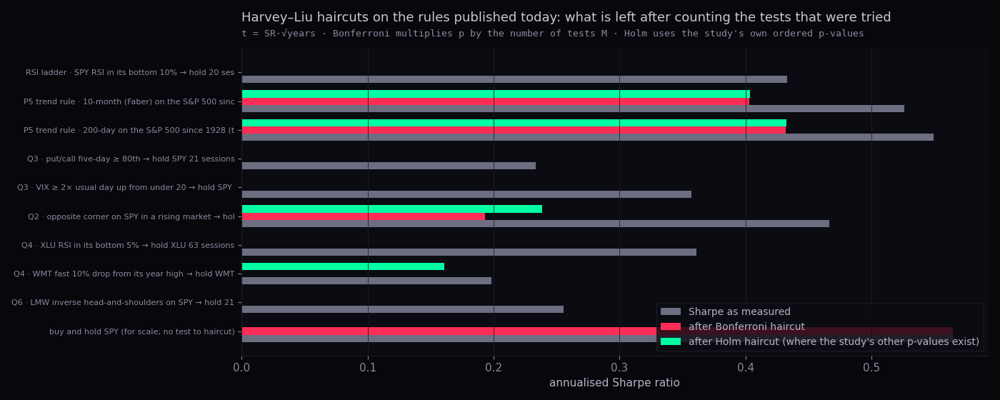
In plain words: the two 1928-to-today trend rules (10-month, 200-day) keep about three quarters of their Sharpe after any correction, because 98 years is long and t is above 5: those are the only rules on the Hub today that Harvey–Liu would call believable. Every rule measured on the 2003-to-today window, including this lane's own cells, has t between 1 and 2.3 and loses most or all of its Sharpe once the tests tried are counted; the opposite corner keeps about 40% under Bonferroni only because it has ten signals and a high per-signal return, which is exactly the case the paper warns about; Holm and BHY leave a little to WMT's knife rule and XLU's washout, on Sharpes under 0.4. Buy-and-hold SPY over the same 23 years has a Sharpe of 0.56 with t = 2.71: that is the bar every timing rule has to clear, and none of the short-window rules does. Harvey-Liu's own rule of thumb: with the number of tests the profession has run, a strategy needs a t-statistic near 3 (not 2) before it deserves belief; a Sharpe under ~1 on a short sample rarely survives any multiple-testing haircut.
Sources: the studies named in each row and their data files; this lane's JSONs for its own p-values. What could be wrong: the overlay Sharpe ignores costs and cash yield; M for the ladder (400) and P5 (340) is the count of cells in those lanes' files; the 1928 index Sharpes are taken from the P5 file, not re-run here.
Code: research/statistics/research-3/ (lib.py with the Geiger port, q1…q6, build_page.py, check_geiger.py). Test: tests/research-3-20260928.test.mjs. Data: deliverables/20260928/research-3/data/. Charts: deliverables/20260928/research-3/charts/.